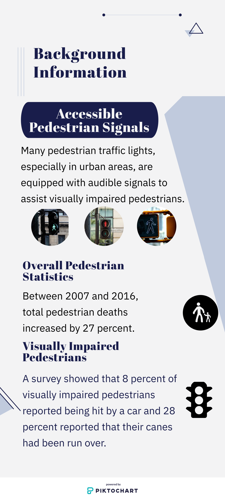

{{ paragraph1.text1 }}
{{ paragraph1.text2 }}
Abstract
Visually impaired pedestrians are generally more susceptible to accidents at street intersections because they lack the ability to see oncoming cars and other obstructions. A study conducted by the American Council for the Blind showed that 8 percent of visually impaired pedestrians reported being hit by a car and 28 percent reported that their canes had been run over. Pedestrian intersections often have audible cues to assist visually impaired pedestrians; however, these are not always effective because many pedestrian intersections, especially in rural areas, do not contain audible cues. Additionally, many pedestrians have difficulty memorizing the different sounds that lights facing different directions play, which may cause them to cross at an unsafe time. Because of this, a more effective system is needed to help visually impaired pedestrians know when it is safe to cross the street.
For this project, an image classification model and an object detection model were created to locate and classify pedestrian traffic lights in real-time in order to help visually impaired pedestrians know whether it is safe to cross the street. The classification model used a convolutional neural network and had a final accuracy of approximately 81.82 percent. The object detection model was created by retraining an existing object detection model called SSD Mobilenet, and ended with a final precision of about 81.8 percent, a final recall of about 90.0 percent, and a final F1 accuracy of about 85.7 percent. These models have the potential to greatly reduce accident rates for visually impaired pedestrians.
Phrase 1
Visually impaired pedestrians are at a high risk for getting into accidents because they lack the ability to see cars or other obstructions in front of them.
Phrase 2
The overall aim of this project is to create a vision system for visually impaired people that would recognize pedestrian traffic lights and tell them when it is safe to cross.
Background Infographic

Background
Visually impaired pedestrians often get into accidents while crossing the street, because they are not able to see if there are any oncoming cars. In a survey conducted on visually impaired pedestrians by the American Council of the Blind, 8 percent of the respondents reported that they had been hit by a car at an intersection, and 28 percent of the respondents reported that their canes had been run over (Al-Fuqaha, Oh, Kwigizile, 2018). A study conducted in 2012 demonstrated that blind and visually impaired pedestrians performed significantly worse in judging whether it was safe to cross than the normally sighted, even with access to auditory information (Hassan, Massof, 2012).
Pedestrian injury has been increasing at a growing rate in recent years. Between 2007 and 2016, total pedestrian deaths increased by 27 percent. In 2017, the estimated number of pedestrian fatalities was close to 6,000 (Retting, 2017). In comparison, there were closer to 4,000 such deaths in 2009 (Pharr, Coughenhour, Bungum, 2013). This shows that there is a growing increase in the number of pedestrian injuries and fatalities over the years.
Many attempts have been made to assist visually impaired pedestrians, but for the most part, they have not been very successful. One such attempt has been the implementation of auditory signals at pedestrian traffic lights to alert pedestrians when it is safe to cross. These audible signals are usually similar to a “chirping” sound or a “cuckoo” sound. However, this is not an effective overall solution. One issue is that these signals are not required by law; many cities only implement them at citizens’ request. Because of this, for example, in the city of Columbus, Ohio, only about 10.5 percent of pedestrian traffic lights have audible signals (Kistler, 2015). Another common issue with these audible signals is that the sounds can vary between different cities. While some cities use the “chirping” sound during green lights, other cities may use “cuckoo” sounds, “rapid tick” sounds, or “peep-peep” noises. Because there is no standard noise for pedestrian traffic lights, pedestrians may get confused when they hear a different sound than the one that they are used to hearing. In addition, they sometimes mistake birds chirping for the sound of the pedestrian light, which may cause them to attempt to cross the street at an unsafe time.
This project attempts to assist pedestrians and to help them know when it is safe to cross the street using machine learning and neural networks. A live object detection model was created to detect pedestrian traffic lights in real-time and alert the pedestrian if there are any red or green traffic lights ahead. This would resolve the problem of different sounds for different traffic lights because this would always alert the pedestrian in the same way. It would also solve the problem of not all traffic lights having signals to help the visually impaired, because the object detection model would work at all traffic lights, regardless of whether or not they were created with any extra features.
Initially, an image classification model was created to distinguish between red and green pedestrian traffic lights. A dataset of about 300 images of each type of traffic light was created, and a convolution neural network was trained to classify images of traffic lights into one of the two categories. This model worked well with zoomed-in images of pedestrian traffic lights, but had low accuracy in classifying images containing other features as well as the traffic lights. Because of this, the classification model was replaced with an object detection model, which would detect pedestrian traffic lights in an image as well as classify them, so that it would still have good accuracy on zoomed-out images of pedestrian traffic lights.
Procedure Infographic
Procedure
Materials used in this project included a MacBook Pro Laptop, a Samsung Galaxy S9 cell phone, and a Raspberry Pi 4 computer. Software used in the project included the Python 3.8 language, the TensorFlow machine learning and deep learning library, the OpenCV python library, the NumPy python library, the ElementTree Python library, the image labeling service LabelImg, and the Android Studio software for mobile application development.
The preliminary step in the creation of the neural networks was obtaining a dataset. For this, a Google Images API was used. A JavaScript command was run in the console while Google Images was opened to automatically download the images into a folder. This was done for images of both green traffic lights and red traffic lights. The data was then filtered to remove any images that did not contain either type of pedestrian traffic light. The final sizes of each dataset were 128 images of red traffic lights and 149 images of green traffic lights.
Next, the data was used to train an image classification neural network. The machine learning tensor library TensorFlow 2.0 was used for training the model. The images were loaded into the python file using the OpenCV library and were converted into 4-dimensional arrays of integers using the NumPy library. TensorFlow was used to create a 6-layer Convolutional Neural Network with 3 convolutional layers and 3 dense layers, with a 2-dimensional output (containing the probabilities that the image contained a green traffic light and a red traffic light, respectively). The two datasets were combined into a single dataset containing 277 images, and this was split at random into two datasets: a training dataset with 200 images and a validation dataset with 77 images. The model was trained over 50 epochs of the data using the softmax activation function and cross-entropy loss.
After the image classification model was created, the model was converted to an object detection model. The object detection model was created using the TensorFlow object detection library. First, the set of images was annotated with rectangles notating where the objects (traffic lights) were located within the image. The images in the previous dataset had been shrunken to the size of 100 pixels by 100 pixels, but for object detection, larger images were required to produce an accurate model. Additionally, images that did not contain a pedestrian traffic light could be used in an object detection model. As a result, the image dataset was redownloaded using the google images API (with about 400 images in each of the two datasets) and was resized so that each image was 300 pixels by 300 pixels. The images were annotated with boxes denoting the locations of the objects within each image using the image-labeling service LabelImg, and this data was parsed and converted into python NumPy arrays using Python’s XML ElementTree library.
These images were again loaded into a Python file using the OpenCV and NumPy libraries to be used in training an object detection model. The object detection model SSD_MobileNet was retrained using the TensorFlow library to repurpose the model for the detection of pedestrian traffic lights.
The object detection model and the image classification model were then implemented for Android mobile devices to allow for easier access to the neural network by users. The models were implemented using TensorFlow Lite, a library which allows TensorFlow neural networks to be implemented for mobile applications.
Image Classification Figure
Figure 1: Image Classification loss and accuracy. Train loss represents the neural network's error. Train accuracy represents the model's accuracy with data that it has previously seen. Val Accuracy represents the model's accuracy with data that has not previously been exposed to.
Object Detection Figure
Figure 2: Object Detection Loss. The loss value represents the object detection neural network's error over the 5,000 training epochs.
Results
For the image classification model, the final accuracy and loss values were determined using TensorFlow’s built-in accuracy and loss calculator. The model was trained over 50 epochs of the train data. The model’s final train accuracy was 96.00 percent with a cross-entropy loss value of 0.0770 and a validation accuracy of 74.03 percent. However, the optimal state of the model (where the validation accuracy was the highest) was located after the 22nd epoch, where its accuracy was 89.00 percent, its cross-entropy loss value was 0.2061, and its validation accuracy was 81.82 percent. Because of this, the final model was reverted back to its state when it had completed 22 epochs. Figure 1 (above) shows a graph of the train loss, train accuracy, and validation accuracy over the first 22 epochs.
For the object detection model, the TensorFlow service TensorBoard was used to find the loss value of the model. The model began with a loss value of about 15.5 and finished with a value of about 2.5. The model was trained over 5,000 epochs of the training data, which contained 603 annotated images. Based on a manual validation of the model on the test dataset, the model finished with a final precision value of about 81.81 percent, a final recall value of about 90.00 percent, and a final F1 accuracy value of about 85.70 percent. Figure 2 (above) shows a graph of the train loss of the model over all 5,000 epochs.
Discussion/Conclusion
The image classification neural network finished with an accuracy of about 82 percent, after starting with an accuracy of about 42 percent. This high accuracy demonstrates that the model was successfully able to learn the differences between green and red pedestrian traffic lights. While the model was able to take an image of a pedestrian traffic light as an input and output the state of the traffic light, the model did not do well with classifying images where the traffic lights were small or distant. Rather, it worked most effectively with images with large or nearby pedestrian traffic lights, but these do not accurately represent what a pedestrian would see at an intersection. Additionally, the model always outputted a value of “green” or “red,” even if there was no traffic light in the image. Because of this, the image classification model would not suffice for helping visually impaired pedestrians and the object detection model was needed to accurately locate and classify pedestrian traffic lights in real-time.
The object detection model was manually evaluated to obtain the precision, recall, and F1 values, which are three common metrics in evaluating object detection models. The precision value was found by calculating c/(c+f) , where c represents the number of correctly predicted bounding boxes, while f represents the number of false positives (boxes predicted when there was no pedestrian traffic light in the image). This was found to be about 81.82 percent. The recall value was found by calculating c/(c+i) , where c represents the number of correctly predicted bounding boxes and i represents the number of traffic lights that were not detected by the model. This was calculated to be about 90.00 percent. The F1 accuracy value was calculated by finding 2*p*r/(p+r) , where p represents the precision of the model and r represents the recall of the model. This was found to be about 85.70 percent.
The high recall value of the object detection model shows that when there is a traffic light in the image, the model is successfully able to locate and classify it about 90 percent of the time. The precision value of the model is slightly lower, which means that the model occasionally identifies and classifies pedestrian traffic lights in images when they do not exist. The F1 value creates a balance between the two values, providing an accuracy number that takes into account both false positives and missed traffic lights.
While the values for the object detection seem similar to those of the image classification model, the object detection model was much more successful at accurately locating and predicting the state of pedestrian traffic lights. This is because it was able to successfully determine whether or not there was a pedestrian traffic light in the image, and it was able to classify each traffic light in the image, while the classification model was only able to classify the entire image as one entity, and was not able to determine whether or not the image contained a traffic light.
There are many possible extensions to this project. One possible extension would be to improve the runtime of the model, because on average, the model took a little under one second per image to classify the image, draw the bounding box, and display the image. While this would likely be sufficient to help visually impaired pedestrians, making it detect the traffic lights more quickly could help improve its real-time detection accuracy. Another possible extension would be to create a more cost-effective device on which the model can be implemented. This would allow it to be accessible to all visually impaired pedestrians. One more possible extension would be to improve the precision and recall values for the model, to reduce the model’s susceptibility to errors in detection and classification. This could be accomplished by increasing the size of the dataset and by tuning the hyperparameters (values which must be manually set before training) to help the model more accurately locate and classify the different traffic lights.
References
Al-Fuqaha, A., Oh, J. S., & Kwigizile, V. (2018). 16-06 Vehicle-to-Device (V2D) Communications: Readiness of the Technology and Potential Applications for People with Disability.
Kistler, S. E. (2015, September 17). Why do intersections have different audible crosswalk signals? Retrieved from https://www.dispatch.com/article/20150911/NEWS/309119629
TensorFlow Lite. (2019). Retrieved from https://www.tensorflow.org/lite
Szeto, A. Y., Valerio, N. C., & Novak, R. E. (1991). Audible pedestrian traffic signals: Part 3. Detectability. Journal of rehabilitation research and development, 28(2), 71-78.
How to train an object detection model easy for free. (n.d.). Retrieved from https://www.dlology.com/blog/how-to-train-an-object-detection-model-easy-for-free/
Hassan, S. E., & Massof, R. W. (2012). Measurements of street-crossing decision-making in pedestrians with low vision. Accident; analysis and prevention, 49, 410–418. doi:10.1016/j.aap.2012.03.009